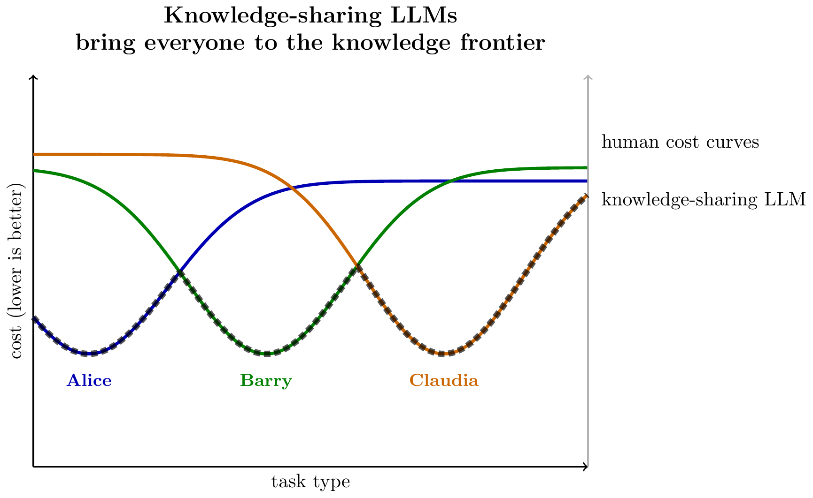

Thanks to Zoë Hitzig & Parker Whitfill for helpful comments.
- Knowledge-creating LLMs have distinct economic implications.
- There has recently been a burst of excitement about LLMs which are advancing the frontiers of human knowledge. I think there are some distinct economic implications of knowledge-creation LLMs that I haven’t seen described elsewhere:
-
- Knowledge-sharing LLMs will be used by non-experts, and will be widely available.
- Knowledge-creating LLMs will be used by experts, and will be closely held by the labs, or sold with exclusive licenses.
Below I give a general argument, then a very simple formal model.
A notable implication for AI safety: labs may stop releasing their frontier models publicly, as the economic incentive to sell access diminishes.
- Sarah Friar, OpenAI’s CFO, January 2026.
-
“As intelligence moves into scientific research, drug discovery, energy systems, and financial modeling, new economic models will emerge. Licensing, IP-based agreements, and outcome-based pricing will share in the value created.”
- A visual explanation.
- Below we illustrate a set of humans, and their cost to do different tasks. Here each human has a speciality, i.e. a set of tasks at which they have the lowest cost. We can visualize a knowledge-sharing LLM as having the minimum-cost across all humans, while a knowledge-creating LLM achieves even lower costs.
Model of LLMs for Discovery
- It’s useful to distinguish between two types of LLMs:
-
- LLMs that share existing knowledge (old LLMs)– they are trained on human-produced and human-judged data.
- LLMs that discover new knowledge (new LLMs) – they are trained against new data directly from the real world, e.g. math, verifiable problems, computer use, actions in the world.
- Old LLMs share existing knowledge.
-
Traditionally LLMs are trained with human judgment as the ground truth, using labels from paid raters, or from LLM users. As a consequence they can answer questions and solve problems up to the limits of human expertise but rarely beyond.
I have elsewhere argued that it’s useful to think of LLMs as sharing existing knowledge (one, two).
An implication: they will be used by people outside their areas of expertise, and by firms that are followers, to catch up to the frontier.
As a consequence they decrease knowledge rents – people and firms whose value is from their existing knowledge.
They increase home production (you can solve problems yourself instead of paying for it), and so decrease GDP.
They decrease the returns to innovation (and news-gathering), insofar as they cause new knowledge to diffuse more quickly.
This business has high fixed costs – collecting all the knowledge to train the model – and relatively low marginal costs in sharing that knowledge.
- New LLMs discover new knowledge.
-
Over the past year there have been various announcements of LLMs used to advance the state-of-the-art on various specific problems, i.e. creating new knowledge.
They will be mostly used by leader firms instead of followers, and will be used inside their area of expertise instead of at the fringes.
We should expect much higher variable costs, i.e. expenditure on advancing the state of konwledge on a single problem.
The demand for new knowledge is much less elastic than the demand for existing knowledge. Selling knowledge to one person is much more valuable than selling to two people. Thus labs will prefer to restrict output, e.g. by selling the knowledge to just one firm, instead of selling the ability to generate knowledge.
Our benchmarks for new LLMs will be qualitatively different. Instead of seeing if they can answer questions which we already know the answer to, we want them to answer new questions, e.g. Erdos problems, or setting records on optimization benchmarks.
Examples of knowledge-creating LLM applications:
- Predict stock prices
- Optimize algorithms
- Optimize technology
- Solve scientific problems
- Create a movie
- A simple model with recipes:
-
- Baseline: everyone buys from the person who knows the best recipe. Everyone has a unit of labor. There’s one consumption good, but various recipes for producing it, \(r\in R\), which determine the labor-cost of producing the good, \(c(r)\). In equilibrium the person who knows the lowest-cost recipe (\(c_1\)) will sell the good in return for others’ labor. Their margins are equal to the difference to the next-lowest-cost recipe, \(c_2-c_1\) (assume Bertrand competition).
- Knowledge-sharing LLMs eliminate rents. Now you invent a knowledge-sharing LLM, which can reveal the lowest-cost known recipe, \(c_1\). You cannot make substantial profits from this knowledge: once two producers have the same cost then margins will be driven to zero. Assuming the recipe does diffuse, total output remains the same but the surplus is now distributed equally. If we additionally assumed some trade cost \(\delta\) then the knowledge will have value equal to \(\delta\), but notably there’s no value to exclusively license your LLM. Also notably the returns to innovation fall: there’s much less incentive to discover a new low-cost recipe if that knowledge will be immediately shared.
- Knowledge-creating LLMs generate additional surplus. Next we introduce a knowledge-creating LLM, which generates a new recipe \(c_0<c_1\). The inventor can monetize this either by producing the good themselves or licensing the recipe to a single producer. Now exclusivity is important: if they sold the recipe to two producers then profits will be driven to zero, and the value of the recipe will be zero. In equilibrium total output increases, the extra surplus is split between consumers and the owner of the new recipe.
- The model can be extended to multiple goods.
-
If people have Cobb-Douglas preferences across goods then they will spend a fixed fraction of labor on each good, and so each good’s market can be treated as independent.
You can visualize the distribution of costs as follows:
- Old LLMs are the minimum cost among existing humans.
- New LLMs lower the cost.
Literature Review: Economic Models
- This post is trying to separate two economic objects that are often conflated:
-
- diffusing existing knowledge vs (ii) creating new knowledge. There are several modeling traditions that map naturally onto this distinction.
Knowledge diffusion and catch-up
- Lucas & Moll (2014) treat knowledge growth as a time-allocation problem.
-
“Agents divide their time between two activities: producing goods and interacting with others in search of new, productivity-increasing ideas.” (Lucas Jr. and Moll 2014)
- Benhabib–Perla–Tonetti (2014) generate growth with an endogenous split between frontier innovation and imitation/catch-up.
-
“The resulting equilibrium is an endogenous segmentation between innovators and imitators.” (Benhabib, Perla, and Tonetti 2014)
- Connection to “knowledge-sharing LLMs”:
- These models make it natural to interpret “old LLMs” as reducing the effective costs/frictions of searching, matching, and imitating (and therefore compressing knowledge rents).
Endogenous growth: ideas as (partly) nonrival inputs
- Romer (1990) frames technology as a special kind of input.
-
“The distinguishing feature of the technology as an input is that it is a nonrival, partially excludable good.” (Romer 1990)
- Jones (1995) emphasizes that many R&D-based models predict strong scale effects that are not borne out empirically.
-
“This paper argues that the”scale effects” prediction of many recent R&D-based models of growth is inconsistent with the time-series evidence from industrialized economies.” (Jones 1995)
- Bloom–Jones–Van Reenen–Webb (2020) document declining research productivity (“ideas getting harder to find”).
-
“More generally, everywhere we look we find that ideas, and the exponential growth they imply, are getting harder to find.” (Bloom et al. 2020)
- Connection to “knowledge-creating LLMs”:
- In this language, “new LLMs” plausibly shift the idea production function itself (not just the diffusion of existing ideas), which re-raises the standard questions of appropriability and market structure.
Appropriability, IP, and licensing
- Arrow (1962) is a canonical statement of why private incentives and social value can diverge for invention/knowledge.
-
“INVENTION is here interpreted broadly as the production of knowledge.” (Arrow 1962)
- Katz & Shapiro (1985) analyze when a patent holder chooses to license versus exclude.
-
“We find that major innovations will not be licensed, but that equally efficient firms will tend to license minor innovations.” (Katz and Shapiro 1985)
- Arora–Fosfuri–Gambardella (2001) describe how a market for technology changes firms’ strategic choices.
-
“Markets for technology increase the strategy space: firms can choose to license in the technology instead of developing it in-house.” (Arora, Fosfuri, and Gambardella 2001)
- Kamien–Oren–Tauman (1992) compare licensing mechanisms (e.g. auctions vs uniform royalties).
-
“Proposition 6 asserts that for both the patentee and consumers a uniform royalty is inferior to an auction.” (Kamien, Oren, and Tauman 1992)
- Connection to this post’s core claim:
- If “new LLMs” reliably generate valuable, appropriable new recipes, then the equilibrium object may be closer to exclusive licensing / restricted access (or secrecy) than to wide diffusion of a general-purpose tool.
More to Do
- There are obvious implications for intellectual property.
-
A specific worry: if we maintain the same intellectual property law then there will be a land-grab, firms will rush to be the first to discover new technologies, and will then get an exclusive license, but that exclusivity will be inefficient (i.e. it wasn’t necessary to motivate the research, the technology would’ve been discovered anyway).
- It would be more satisfying to have a generative model.
- I’d really like to sketch out a very simple model in which both humans and LLMs learn recipes from experimenting against the real world.
References
Arora, Ashish, Andrea Fosfuri, and Alfonso Gambardella. 2001. “Markets for Technology and Their Implications for Corporate Strategy.” Industrial and Corporate Change 10 (2): 419–51. https://doi.org/https://doi.org/10.1093/icc/10.2.419.
Arrow, Kenneth J. 1962. “Economic Welfare and the Allocation of Resources for Invention.” In The Rate and Direction of Inventive Activity: Economic and Social Factors, 609–26. Princeton University Press. https://www.nber.org/system/files/chapters/c2144/c2144.pdf.
Benhabib, Jess, Jesse Perla, and Christopher Tonetti. 2014. “Catch-up and Fall-Back Through Innovation and Imitation.” Journal of Economic Growth 19 (1): 1–35. https://doi.org/https://doi.org/10.1007/s10887-013-9095-z.
Bloom, Nicholas, Charles I Jones, John Van Reenen, and Michael Webb. 2020. “Are Ideas Getting Harder to Find?” American Economic Review 110 (4): 1104–44. https://doi.org/10.1257/aer.20180338.
Jones, Charles I. 1995. “R&d-Based Models of Economic Growth.” Journal of Political Economy 103 (4): 759–84. https://doi.org/https://doi.org/10.1086/262002.
Kamien, Morton I, Shmuel S Oren, and Yair Tauman. 1992. “Optimal Licensing of Cost-Reducing Innovation.” Journal of Mathematical Economics 21: 483–508. https://oren.ieor.berkeley.edu/pubs/Kamien-Oren-Tauman%20%2843%29.pdf.
Katz, Michael L, and Carl Shapiro. 1985. “On the Licensing of Innovations.” RAND Journal of Economics 16 (4): 504–20. https://ideas.repec.org/a/rje/randje/v16y1985iwinterp504-520.html.
Lucas Jr., Robert E, and Benjamin Moll. 2014. “Knowledge Growth and the Allocation of Time.” Journal of Political Economy 122 (1): 1–51. https://doi.org/https://doi.org/10.1086/674363.
Romer, Paul M. 1990. “Endogenous Technological Change.” Journal of Political Economy 98 (5): S71–102. https://doi.org/https://doi.org/10.1086/261725.
Yuksekgonul, Mert, Daniel Koceja, Xinhao Li, Federico Bianchi, Jed McCaleb, Xiaolong Wang, Jan Kautz, et al. 2026. “Learning to Discover at Test Time.” arXiv Preprint arXiv:2601.16175. https://test-time-training.github.io/discover.pdf.